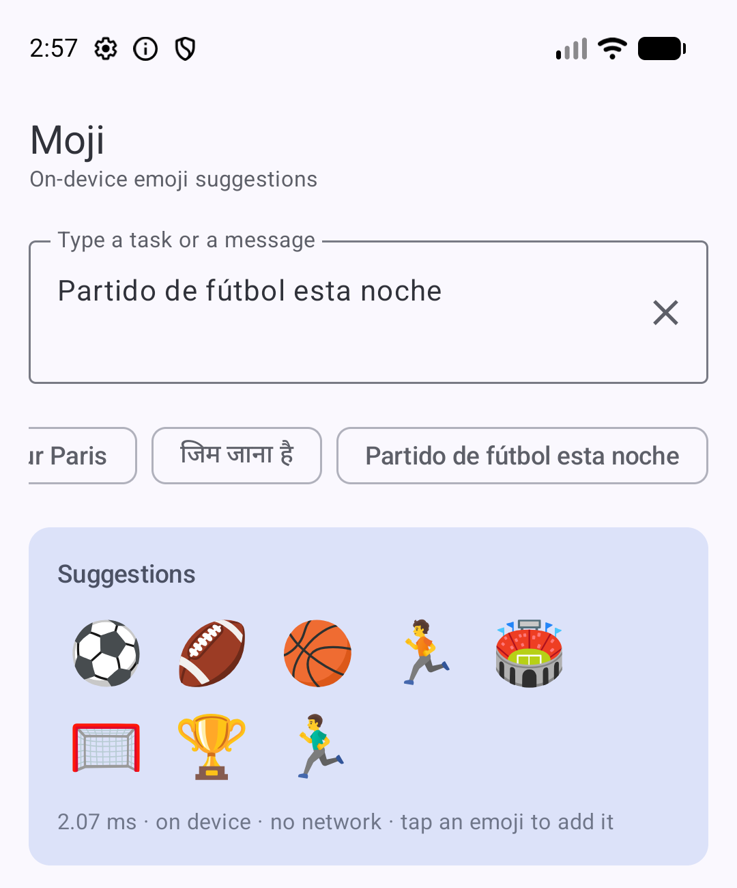
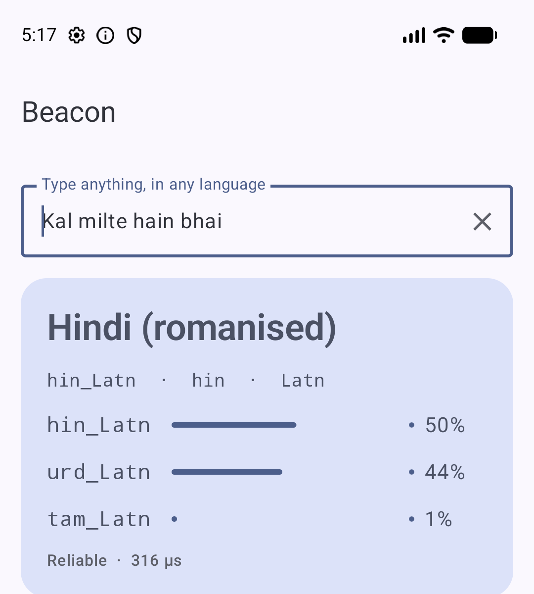
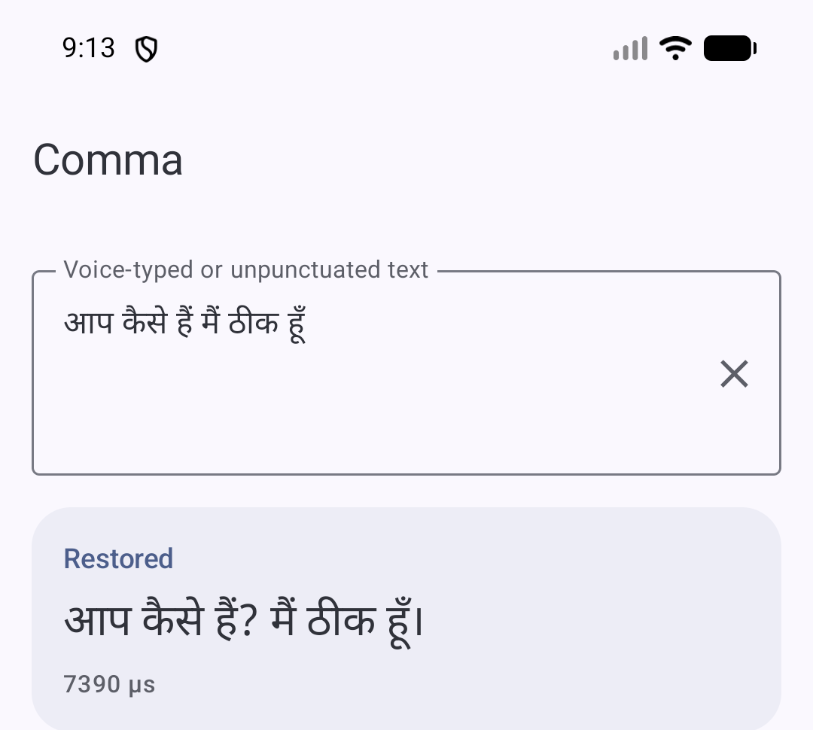
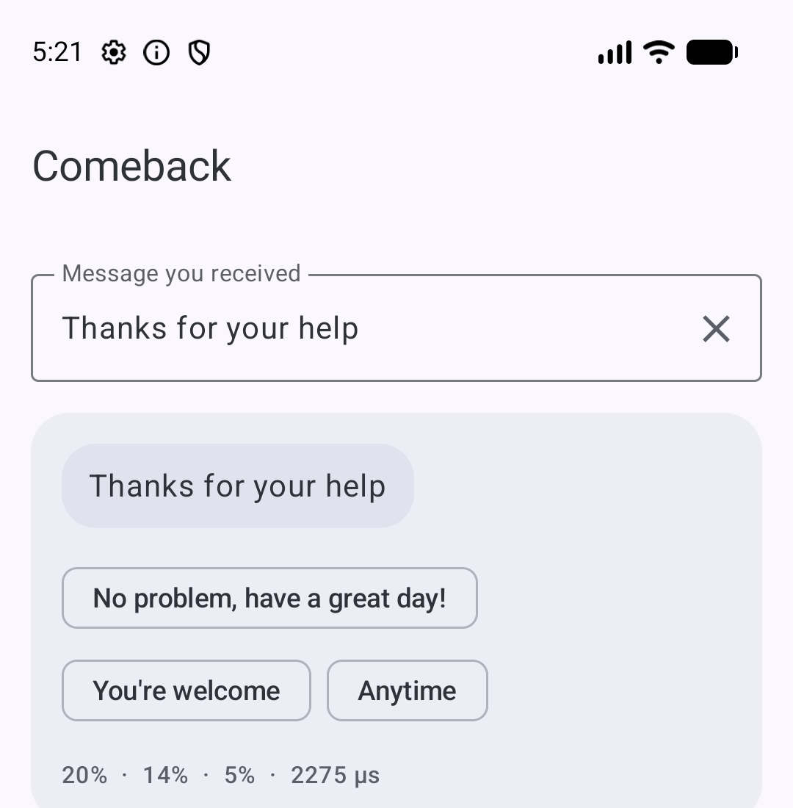
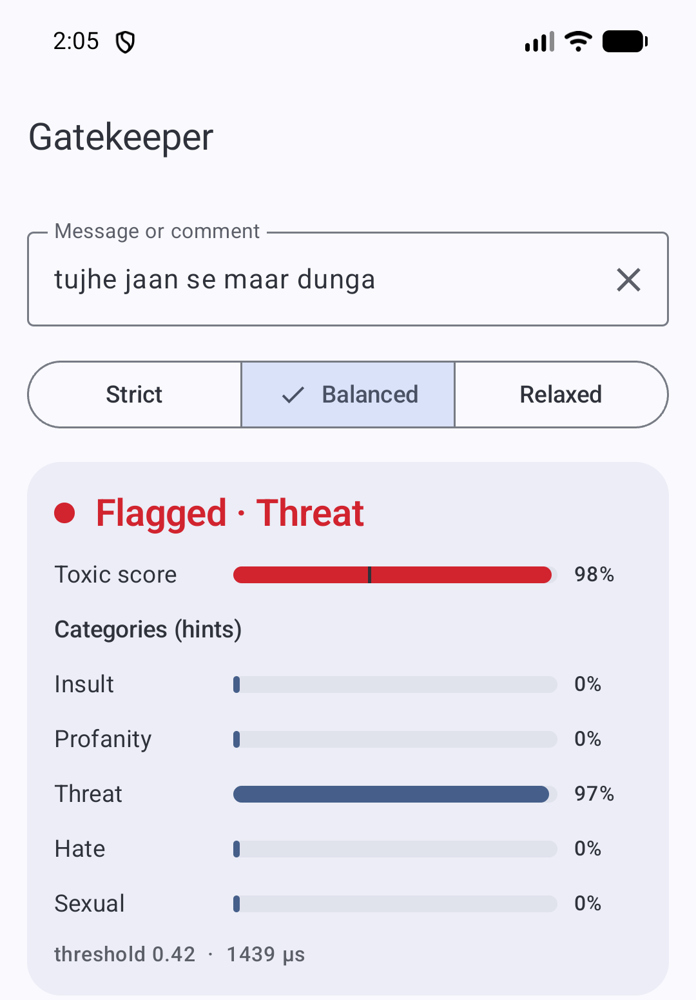

Moji
On-device emoji suggestions for Android. Give it a task or a message and get back the emoji that fit, in 22+ languages.
Use
import io.github.rajumark.hoverfly.moji.Moji
Moji(context).use { moji ->
moji.suggestions("Pay my bills")
// 💰 💸 🧾 💵 💳 …
}Install
implementation("com.github.rajumark:moji:v1.1.0")
Highlights
- No dependencies. Pure Kotlin inference — no ONNX Runtime, no TFLite, no native code.
- Private & offline. The model ships inside the AAR. No network, no permission, no telemetry.
- Parity-tested. Top-1 and top-5 predictions match a Python reference implementation exactly on all 443 test vectors.
Beacon
On-device language detection for Android. Give it any text, even a two-word chat message, and it tells you the language and the script — including romanised Hinglish and Tanglish.
Use
import io.github.rajumark.hoverfly.beacon.Beacon
Beacon(context).use { beacon ->
beacon.detect("Kal milte hain bhai").label
// "hin_Latn" Hindi (romanised)
}Install
implementation("com.github.rajumark:beacon:v1.1.0")
Highlights
- 211 labels. 195 language/script pairs, all 22 scheduled Indian languages, and 12 romanised South Asian languages.
- Strong on chat. 88.3% on hand-written chat messages vs. 71.3% for Google ML Kit Language ID on the same set.
- Private & offline. No network, no permission, no telemetry.
Comma
On-device punctuation and capitalisation for Android. Turns voice-typed or unpunctuated text into readable sentences — commas, full stops, question marks and capitals.
Use
import io.github.rajumark.hoverfly.comma.Comma
Comma(context).use { comma ->
comma.restore("can you pick up the kids at 5 i am stuck in a meeting")
// "Can you pick up the kids at 5? I am stuck in a meeting."
}Install
implementation("com.github.rajumark:comma:v1.0.0")
Highlights
- Made for Indian text. English, Hinglish, Tanglish, Hindi, Bengali, Marathi, Gujarati, Punjabi, Tamil, Telugu, Kannada, Malayalam, Urdu, plus six European languages.
- Each script's own marks. A full stop is । in Hindi, Marathi, Bengali and Punjabi, and ۔ in Urdu.
- Long text handled. A whole voice note is processed in overlapping windows, so every word gets context on both sides.
Comeback
On-device smart replies for Android. Reads the message you received and suggests short replies to tap, like the reply chips in messaging apps.
Use
import io.github.rajumark.hoverfly.comeback.Comeback
Comeback(context).use { comeback ->
comeback.replies("Thanks for your help")
// [No problem] [You're welcome] [Anytime]
}Install
implementation("com.github.rajumark:comeback:v1.1.0")
Highlights
- Safe by design. Replies are picked from a fixed, reviewed list, never generated — it can't write something rude or odd.
- Different chips. At most one reply per intent group, so the 3 chips mean different things.
- Small and fast. 4.6 MB and ~0.5 ms per message, versus 6.6 MB + 4.4 MB native libs and ~16.6 ms for Google ML Kit Smart Reply.
Gatekeeper
On-device toxic message detection for Android. Reads a chat message, comment or review and tells you whether it's abusive, offensive, hateful, threatening or sexual harassment.
Use
import io.github.rajumark.hoverfly.gatekeeper.Gatekeeper
Gatekeeper(context).use { gk ->
gk.check("tujhe jaan se maar dunga")
// Verdict(isToxic=true, score=0.98, topCategory=THREAT)
}Install
implementation("com.github.rajumark:gatekeeper:v1.1.0")
Highlights
- Made for Indian chat. Native Hindi, Tamil, Telugu, Malayalam and Kannada, romanised Hinglish and Tanglish, English, plus ~15 other languages.
- Few false alarms. 98.8% of everyday chat messages pass; slang stays clean.
- Tunable sensitivity. STRICT, BALANCED or RELAXED thresholds, or your own.
Vocal
On-device spoken language identification for Android. Tells which of 32 languages (14 South Asian) is being spoken, from a few seconds of audio.